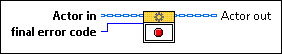

|
Actor in specifies the state of the actor after it has stopped handling messages. |
 |
final error code specifies the error code, if any, that caused this actor to shut down. |
 |
Actor out returns the actor. |
Owning Palette: Commonly Overridden Methods (Actor Framework)
Requires: Base Development System
(Filename: Actor Framework.lvlib:Actor.lvclass:Stop Core.vi)
Defines what the actor does before it stops. Use the final error code input to determine whether the actor shut down in response to an error.
By default, this method passes the Stop message along to all auto-stop nested actors. A descendant class may override this method to define additional behavior, such as shutting down any processes the actor initiated in its override of the Actor Core method.
